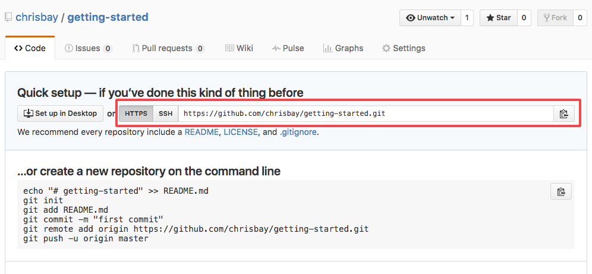
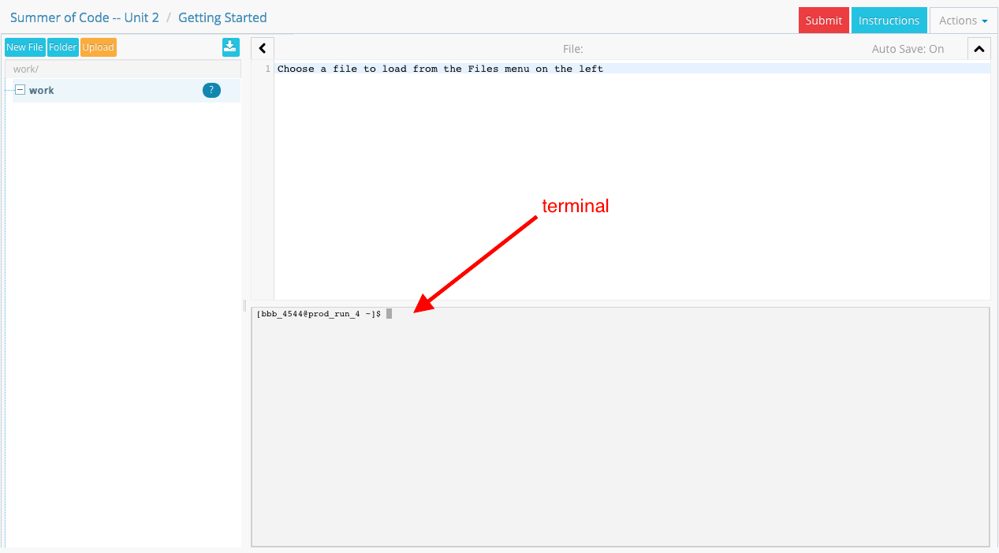

Assignment: Getting Started
The purpose of this aassignment is to provide you with more practice with Git and GitHub, and with the process of turning in your problem sets using both GitHub and Vocareum.
One of the best ways to become familiar and comfortable with Git is to use the same commands repeatedly, and build Git into your coding workflow. This will develop your "muscle memory" so that you learn both the mechanics and principles at the same time.
The Process
Carry out each of the following tasks. Start by opening a terminal and navigating to the directory where you store your code. Windows users will open a PowerShell window; from now on we'll just say "terminal" for Windows/Mac/Linux when we really mean the specific terminal program for your operating system.
Note that for some of the example terminal commands displayed below, we don't always included the resulting output. Output is displayed when we think it will be valuable to confirm that your output matches ours. Otherwise, we just show you the command you should type, but not the result.
-
Create a repo. Visit your profile page on github.com and select the Repositories tab. Create a new repository by clicking the green "New" button. In the resulting dialogue, give your repo the name
getting-started.
-
Clone the repo to your machine. GitHub will redirect you to a new page after creating the repository. On this page, copy the repository URL for your repo:

Back in your terminal, type:
$ git clone [URL] Cloning into 'getting-started'... warning: You appear to have cloned an empty repository. Checking connectivity... done.where you paste in your project URL in place of [URL].
Move into your new directory:
$ cd getting-startedCheck the status, to make sure everything is set up properly.
$ git status On branch master Initial commit nothing to commit (create/copy files and use "git add" to track) -
Do some work. In Atom, create a new file named
index.htmland save it to thegetting-started/directory. Add the minimal markup needed to make a well-formed HTML file:<!DOCTYPE html> <html> <head> <title>Page Title</title> </head> <body> <!-- Page content goes here --> </body> </html>Next, add an
<h1>element as a child inside the<body>element:... </head> <body> <!-- Page content goes here --> <h1>Johnny Appleseed!</h1> </body> </html> ...Save your file, and open the file in a browser to make sure everything looks good. You should see your name.
-
Add your work to the repo. Back in the terminal, check your status:
$ git status Untracked files: (use "git add <file>..." to include in what will be committed) index.html nothing added to commit but untracked files present (use "git add" to track)The message indicates that you have created 1 new file, index.html. This represents a "change" since last time. We want to commit that change.
Track the new file, using the
git addcommand, so it will be staged for your next commit:$ git add index.htmlIn general, on future assignments, you will want to add multiple changes at once, without having to type each file name individually. This can be achieved by using:
$ git add .The
.here stands for "all files." When doing this, it is advised to rungit statusfirst, to see the current list of changes and make sure you really do want to batch all of them together into one commit. -
Commit. Now you are ready to commit. If you check your status again, you should see that your change is staged to be committed:
$ git status On branch master Initial commit Changes to be committed: (use "git rm --cached <file>..." to unstage) new file: index.htmlGo ahead and commit your changes, with an appropriate commit message, describing what you have changed:
$ git commit -m "Adding index.html"Note that you'll be asked to authenticate with GitHub. If you get tired of this, you can set up your computer and your GitHub account to use SSH keys.
Now that you have committed, your status should be "clean":
$ git status On branch gh-pages nothing to commit, working directory clean -
Push to GitHub. The commit command will commit your changes to the local Git repo on your computer. Your local repo is now ahead of your remote repo (the one hosted on github.com) by 1 commit. At this point, if you go back and visit your repository page on GitHub, you will not yet see the new index.html file.
In order to sync up your remote repo with your local one, you must push your local changes up to GitHub:
$ git push origin masterYou should read this command as: "Push all of my commits to the 'origin' repository (on its master branch)". The name "origin" is typically used to refer to a remote Git repo, often on a platform such as GitHub or Bitbucket.
-
Submit via Vocareum Now your code is up in GitHub. Time to submit it to Vocareum! Open Vocareum and navigate to the "My Work" view for the "Getting Started" assignment.
In the My Work environment, you should see a terminal at the bottom of your screen:

This is a terminal just like the one on your computer. Clone your repo, just like you did on step 2:
$ git clone [URL]Note that on the Vocareum terminal you might not be able to use a keyboard shortcut (e.g.
cmd-v) to paste your url. But you can right-click on the screen inside the terminal prompt, and paste that way.You should see your repo appear inside your
work/directory on the left.Finally, click Submit!
Notes
A few other things to take note of:
-
No Auto-grader script. This assignment -- and all assignments going forward -- will be manually graded, so you still won't have a grade after you've submitted on Vocareum. In order to receive credit, you'll need to demo your work for a TF during class time.
-
Use this page as a reference. Except for a few minor differences here and there, you will repeat this same proccess for every assignment in Unit 2, using a unique repository and Vocareum assignment for each. We'll remind of you of the steps to take as you go, but if you need a detailed refresher at any point, revisit this walkthrough.
-
What if I want to change my code? If you make changes to your project after cloning it into Vocareum, and you want to submit your latest version, then you will need to use one more Git command, the
pull.In your Vocareum terminal,
cdinto your project folder, and thenpullthe latest changes down from your remote GitHub repo:$ cd getting-started $ git pull origin master